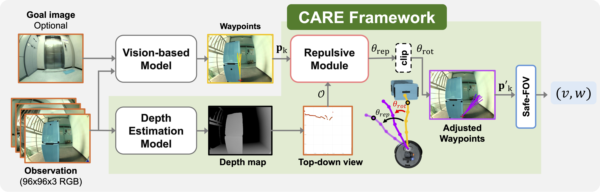
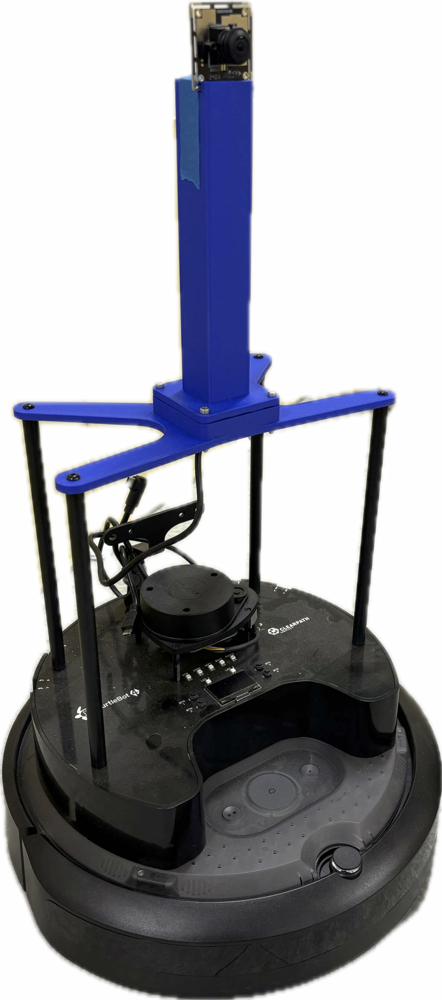
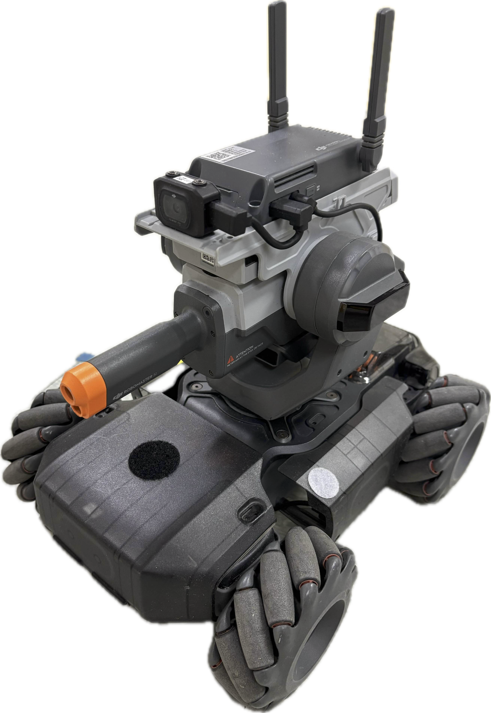
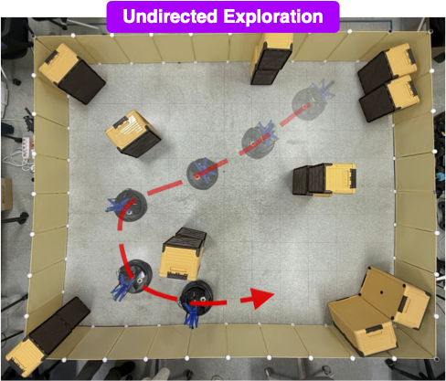
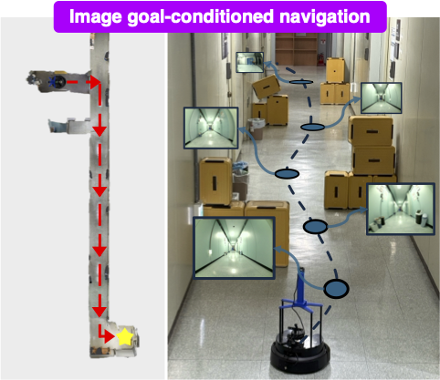

89.5° FOV OAK-D Pro camera
Abstract
We propose CARE (Collision Avoidance via Repulsive Estimation) to improve the robustness of learning-based visual navigation methods. Recently, visual navigation models, particularly foundation models, have demonstrated promising performance by generating viable trajectories using only RGB images. However, these policies can generalize poorly to environments containing out-of-distribution (OOD) scenes characterized by unseen objects or different camera setups (e.g., variations in field of view, camera pose, or focal length). Without fine-tuning, such models could produce trajectories that lead to collisions, necessitating substantial efforts in data collection and additional training. To address this limitation, we introduce CARE, an attachable module that enhances the safety of visual navigation without requiring additional range sensors or fine-tuning of pretrained models. CARE can be integrated seamlessly into any RGB-based navigation model that generates local robot trajectories. It dynamically adjusts trajectories produced by a pretrained model using repulsive force vectors computed from depth images estimated directly from RGB inputs. We evaluate CARE by integrating it with state-of-the-art visual navigation models across diverse robot platforms. Real-world experiments show that CARE significantly reduces collisions (up to 100%) without compromising navigation performance in goal-conditioned navigation, and further improves collision-free travel distance (up to 10.7×) in exploration tasks.
Method Overview
CARE operates in three stages: (1) Top-down range estimation from RGB observations, (2) Repulsive force estimation and trajectory adjustment, and (3) Safety-enhancing mechanism that suppresses forward motion when large heading changes are required.

Robot Platforms
We evaluate CARE across three diverse robot platforms with different hardware configurations and camera setups to demonstrate the generalizability of our approach.

TurtleBot4

LoCoBot
170° FOV fisheye camera

RoboMaster S1
120° FOV camera
Experimental Results
We conduct comprehensive experiments across two main tasks: undirected exploration and image goal-conditioned navigation. The undirected exploration task evaluates the robot's ability to explore safely in environments with unseen objects, while the image goal-conditioned navigation task tests navigation capability in corridors with random unseen obstacles.

Exploration Performance
CARE significantly improves collision-free travel distances up to 10.7× compared to baseline methods. The results show consistent performance gains across all three robot platforms in unknown environments.

Navigation Performance
In goal-conditioned navigation tasks, CARE achieves up to 100% collision reduction while maintaining high task success rates. The system adapts seamlessly to different robot configurations and camera setups.
Image Goal-Conditioned Navigation
Dynamic Obstacles
We conducted additional tests where up to three people abruptly crossed the robot path during navigation. Unlike static obstacles, these dynamic obstacles appeared suddenly from outside the camera field of view, testing CARE's ability to handle unpredictable scenarios where vision-only models often fail to generalize.